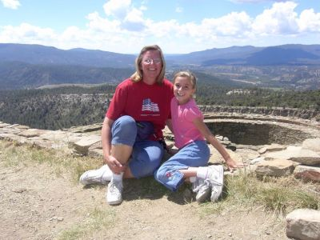
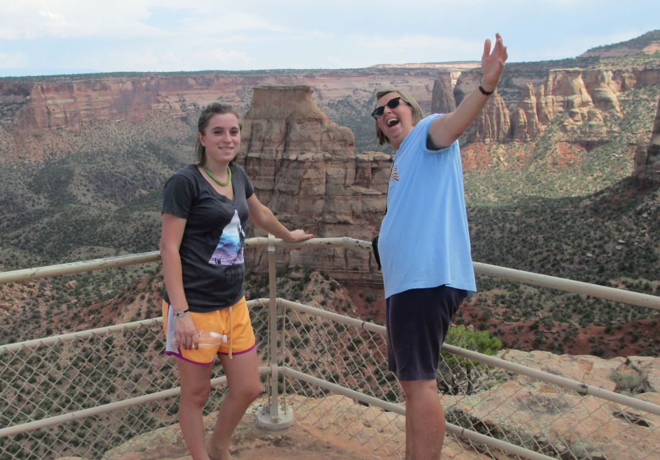
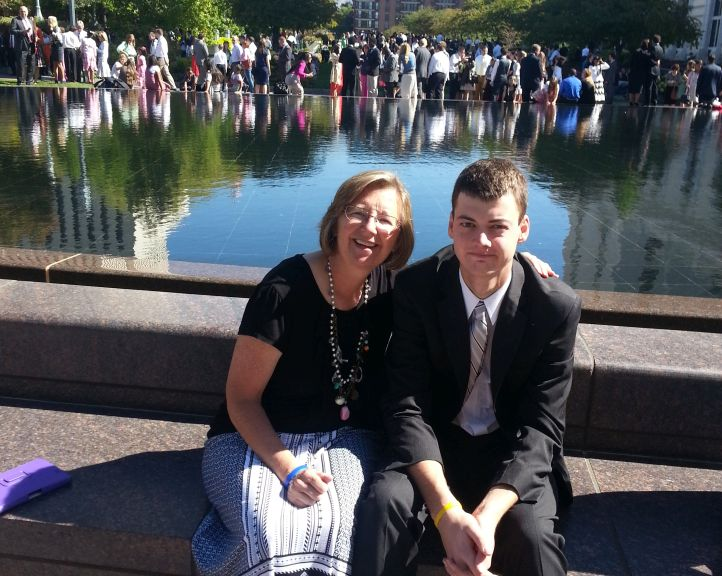

Tracie is currently teaching 5th grade at Canyon Elementary in Hyrum, Utah.  She's a great teacher. She always makes her classes fun, interesting and busy.  She gives 110% to everything that she does. She loves to work in yard, take walks  and has a great sense of humor.
Tracie was diagnosed with breast cancer in October, 2000, had a bi-lateral mastectomy and chemo and radiation therapy. She didn't quite lose all of her hair, but didn't like to have her picture taken, so the only ones I have of that time are those taken in Ukraine (a year after treatment) and later. She's been cancer free now for over 14 years (the official "cured" benchmark is 5 years). These pictures were taken of her with Ana during our vacation to Pagosa Springs, CO the summer of 2005, same 2 near Grand Mesa, CO in August 2014, and with Zac at October 2014 LDS Conference in 2014 (seated next to the reflection pool just east of the Temple).